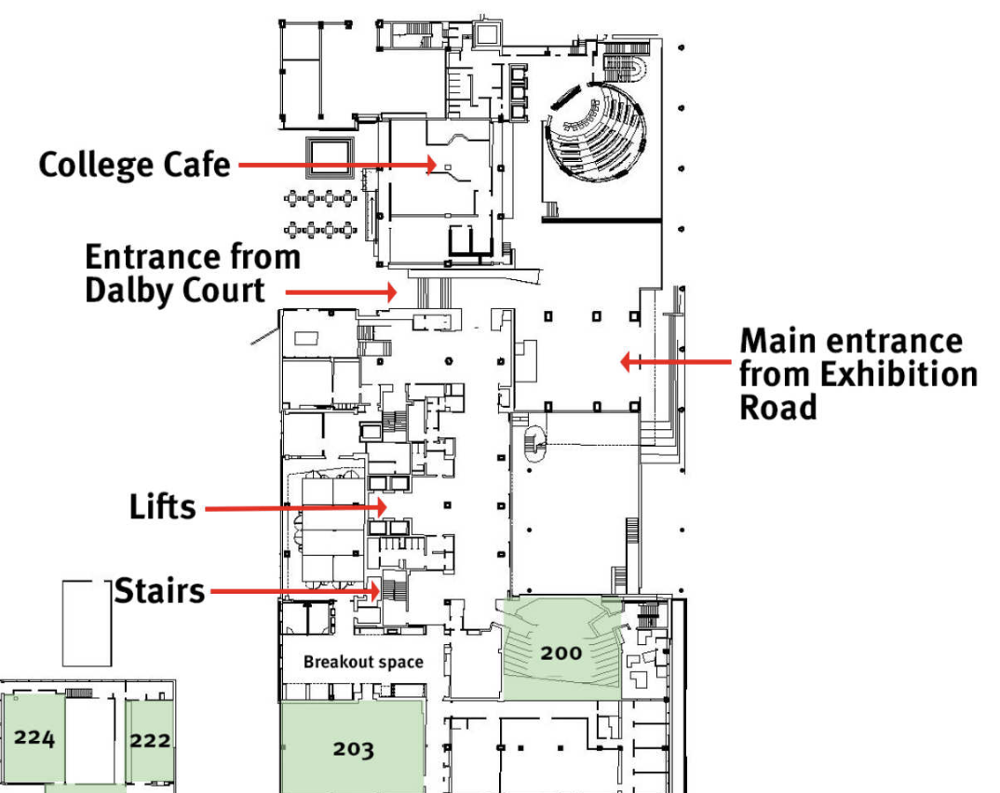
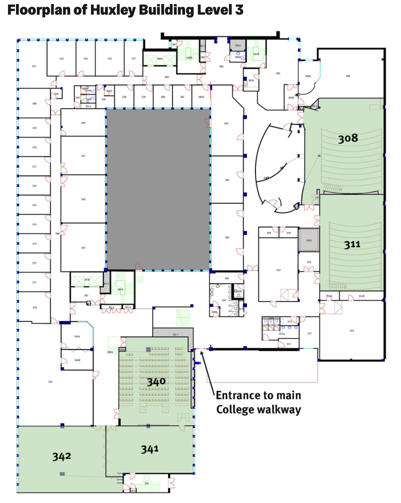
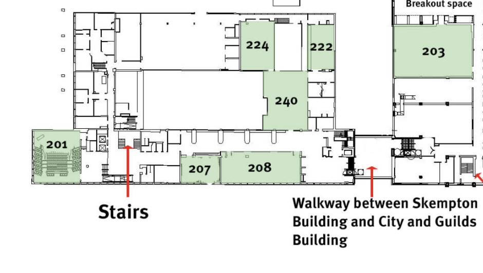

Schedule
| Time | Monday 7 July | Tuesday 8 July | Wednesday 9 July | Thursday 10 July | Friday 11 July |
|---|---|---|---|---|---|
| 8:00 - 9:00 | Welcome Breakfast at V&A Museum | ||||
| 9:00 - 9:30 | Tea and coffee | Tea and coffee | Tea and coffee | Tea and coffee | |
| 9:30 - 10:00 |
Invited Tutorial: Coralia Cartis (Huxley: LT 308) |
Invited talk: Tolga Birdal (Huxley: LT 308) |
Invited talk: Alice Barbora Tumpach (SAF: LT G34) |
Invited talk: Filippo Maria Bianchi (Skempton: LT 201) |
|
| 10:00 - 10:30 | Registration | ||||
| 10:30 - 11:00 |
Invited Tutorial: Marco Cuturi (CAGB: LT 200) |
Coffee break | Coffee break | Coffee break |
Project presentations (Skempton: LT 201) |
| 11:00 - 11:30 |
Invited Tutorial: Estelle Massart (Huxley: LT 308) |
Invited talk: Bastian Rieck (Huxley: LT 308) |
Invited talk: Francisco J Ruiz (SAF: LT G34) |
||
| 11:30 - 12:00 | Coffee break | ||||
| 12:00 - 12:30 |
Invited talk: Marinka Zitnik (CAGB: LT 200) |
Lunch break |
12:10: Group photo at Royal Albert Hall Lunch break |
Lunch break | |
| 12:30 - 13:00 | |||||
| 13:00 - 13:45 | Lunch break | Project time |
Afternoon off (project rooms still available for project time if desired) |
Project time | Social Event: Lunch at Chiswick House and Gardens |
| 13:45 - 15:00 | Project time | ||||
| 13:45 - 17:00 | |||||
| 17:00 - 18:00 |
Poster session (CAGB: CL Lvl 2) |
Social Event: Company night |
|||
| 18:00 - 18:30 |
Social Event: Dinner and live music at Blues Kitchen |
||||
| From 18:30 |
Social Event: Bouldering night |
Event Details
(Subject to change up to the day of the event)
📌 Poster Session
- Poster competition (prizes to be announced on the day of the event)
- Poster presentation at Imperial College London (South Kensington Campus)
🥐 Welcome Breakfast at Victoria and Albert Museum
- Breakfast and registration in Gamble Room inside the V&A
- Continental breakfast provided by Benugo for all LOGML participants
- Private tour available for participants from 9:00
🧗 Bouldering Night
- Bouldering, DJ and dinner at White City Bouldering from 18:30 to 22:30
- Dinner provided by Jakobs
- Shoes and chalk are provided
- Introductory courses for beginners are available at the beginning of the night
- 2 bouldering experts available throughout the night
- Full hire of the bouldering gym - open only to LOGML participants
💼 Company Night at IdeaLondon
- Hosted at IdeaLondon with snacks and drinks
- Includes short presentations by participating companies
- Followed by informal networking and discussions
🎷 Dinner and Live Music at Blues Kitchen
- Pub Food, drinks and live music provided to LOGML participants at Blues Kitchen Shoreditch from 18:00 to 2:00
- Live music from 21, then DJ and dance floor open for the rest of the night
- Private hire of tequila bar room, accessible only to LOGML participants
🧺 Project Presentations
- Final presentations will be held from 10:30 to 12:30 at Imperial College London
- Lunch will follow from 13:00 onwards at Chiswick House and Gardens
- Each group will present the results of their weekly projects (5 minutes presentation)
(Subject to change up to the day of the event)
Filippo Maria Bianchi (University of Norway) - ‘Hierarchical pooling in Graph Neural Networks’
Tolga Birdal (Imperial College London) - ‘Topological Deep Learning: Going Beyond Graph Data’
Coralia Cartis (Oxford University) - ‘Introduction to Riemannian geometry and optimization for machine learning (Part I)’
Estelle Massart (UCLouvain) - ‘Introduction to Riemannian geometry and optimization for machine learning (Part II)’
Marco Cuturi (Apple / CREST-ENSAE) - ‘A Survey of Optimal Transport and its Interplay with Flow Models’
Bastian Rieck (University of Fribourg) - ‘Shapes, Spaces, Simplices, and Structure: Geometry, Topology, and Machine Learning’
Francisco J Ruiz (Google DeepMind) - ‘AI for mathematical and algorithmic discoveries’
Alice Barbara Tumpach (Wolfgang Pauli Institute, Vienna) - ‘Infinite-dimensional Geometry and AI’
Marinka Zitnik (Harvard University) - ‘From molecules to therapies: Scientific discovery in the age of AI’
Directions
South Kensington Campus Map

City and Guilds Building (CAGB), Level 2 Map

Huxley Building, Level 3 Map

Skempton Building, Level 2 Map
